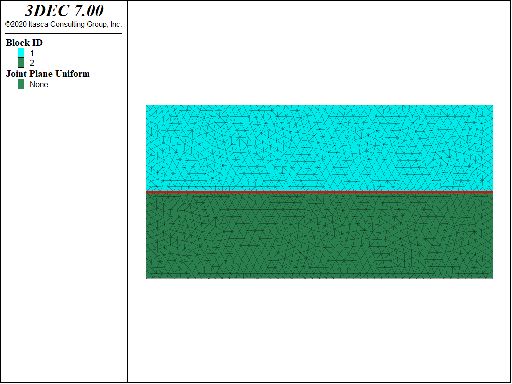
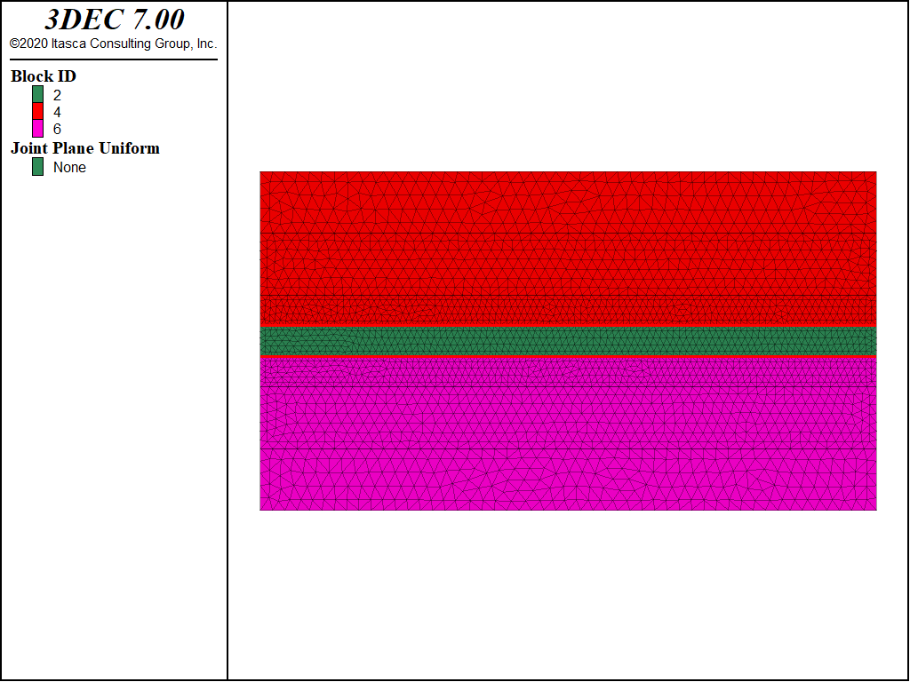
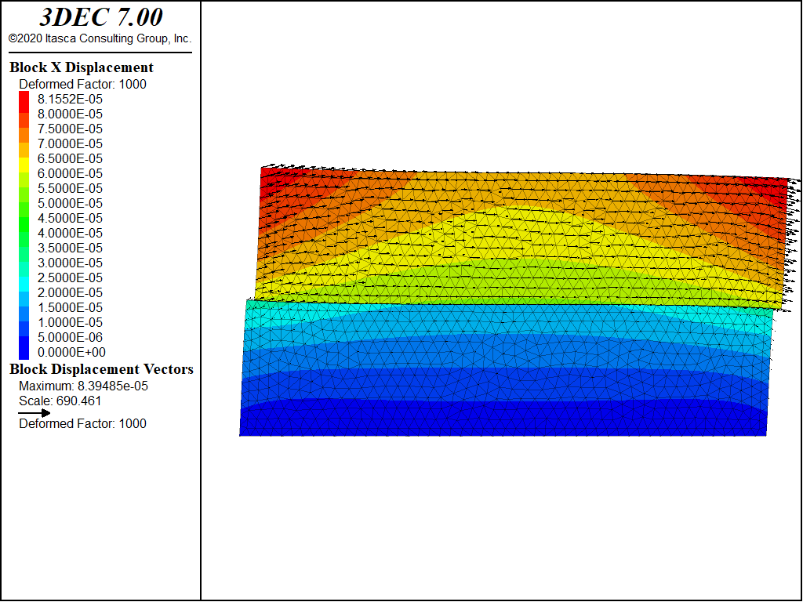
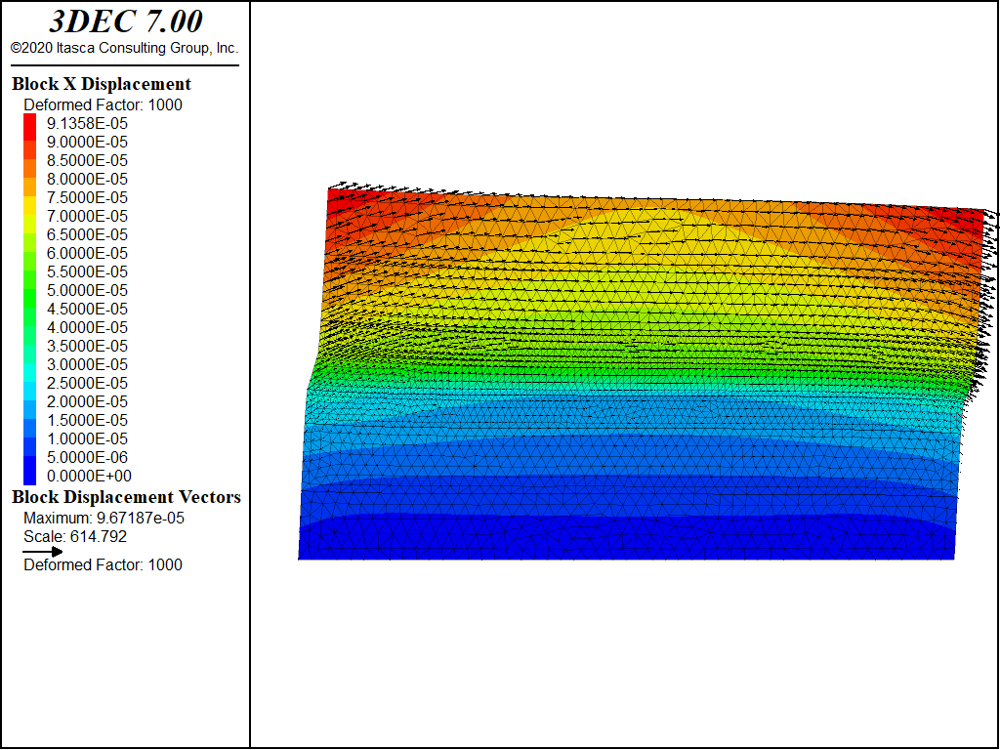
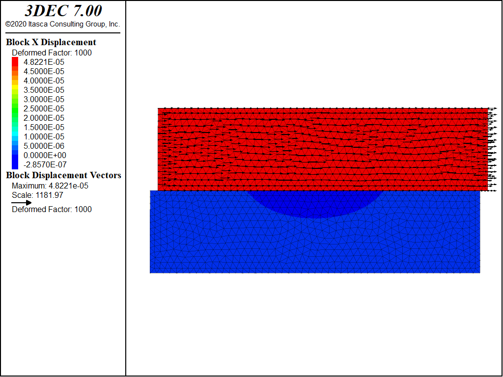
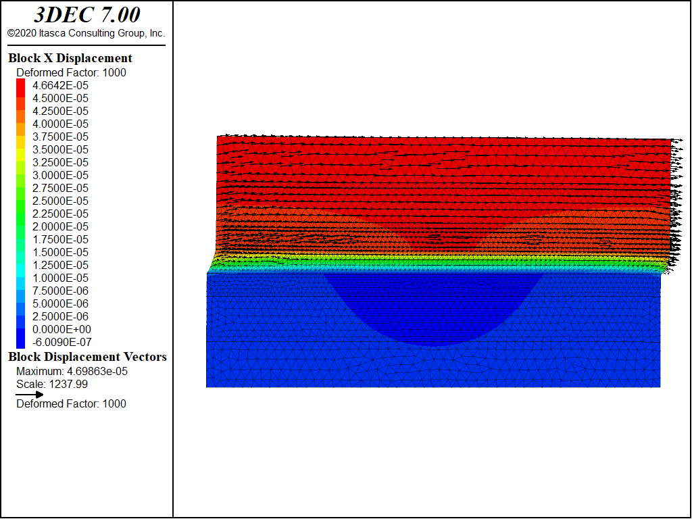
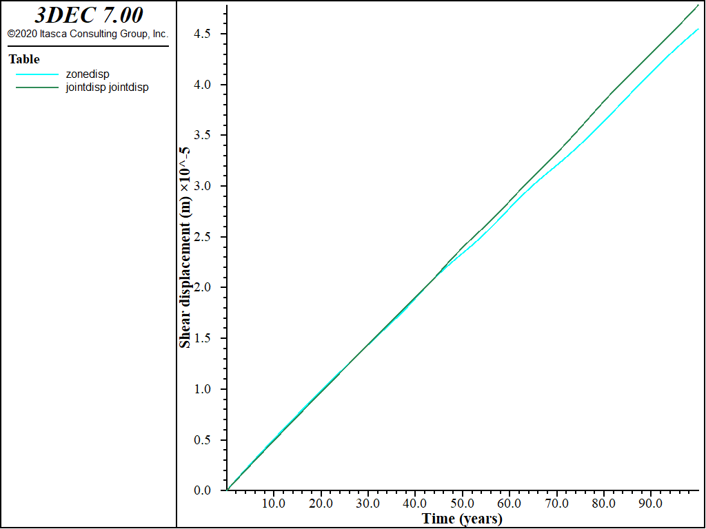
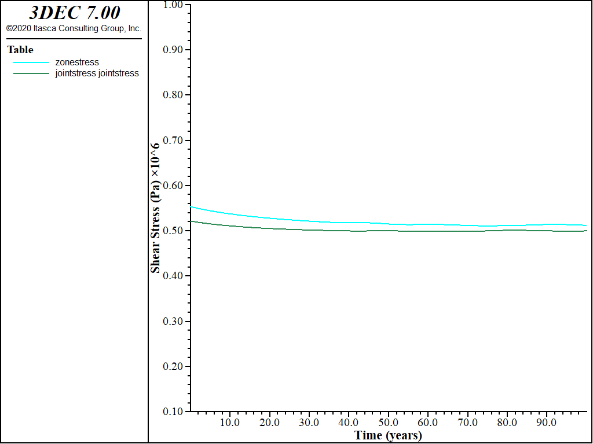

3DEC 中的幂律蠕变节理模型
不连续面的蠕变行为，因节理表面是平面还是粗糙表面，以及充填材料不同而具有不同性质。
根据节理表面特征，无充填不连续面中可区分两种机制。平面节理的蠕变位移由黏附—摩擦机制控制［Bowden 和 Curran 1984］。粗糙节理中，凸起处应力集中使凸起逐步屈服并滑移，剪应力重新分配给其他完整凸起，从而产生蠕变［Schwartz 和 Kolluru 1982；Ladanyi 1993］。
岩石节理可能天然充填摩擦性或黏性材料，通常质量较差。此时，蠕变由充填材料特征控制［Höwing 和 Kutter 1985；Malan 等 1998］。
为模拟充填材料引起的蠕变，我们将常用于模拟软岩剪切蠕变的 Norton 定律，改用于节理单元。
公式
3DEC 幂律节理模型的特点，是剪切方向采用黏弹塑性行为，法向采用弹塑性行为。假定黏弹性与塑性元件串联。黏弹性行为对应 Norton 定律，塑性行为对应莫尔—库仑模型。
接触黏弹性位移增量用于计算试算力增量。以压缩力为正，法向力增量为
剪切力矢量增量为
| 其中 | \(K_n\) 和 \(K_s\) | 分别为法向刚度和剪切刚度， |
| \(A_c\) | 为接触面积，以及 | |
| \(\Delta U^n\) 和 \(\Delta \mathbf{U}^s\) | 分别为增量法向位移和剪切位移。 |
与网格单元 Norton 幂律相似，剪切采用双分量关系：
其中，\(\bar{F}^{\, s} = \sqrt{\frac{3}{2}}\left|\mathbf{F}^s\right|\)；
其中
且 \(\bar{\sigma} = \frac{F^s}{A_c}\)。
\(A_1\) 和 \(A_2\) 为用户设置的幂律常数，\(n_1\) 和 \(n_2\) 为用户设置的幂律指数，\(\sigma_1^{ref}\) 和 \(\sigma_2^{ref}\) 为用户设置的参考应力。
与莫尔—库仑节理模型相同，可通过指定黏聚力和摩擦限制剪切力，也可通过指定抗拉强度限制拉应力。蠕变节理模型还可按莫尔—库仑节理模型所述发生剪胀。
节理蠕变模型参数汇总
蠕变节理模型参数汇总于表 2（Table 2）。在 3DEC 中通过 block contact assign jmodel power 命令将该模型赋予接触。
| 参数 | 说明 | 国际单位制单位 |
|---|---|---|
stiffness-normal |
节理法向刚度 | Pa/m2 |
stiffness-shear |
节理剪切刚度 | Pa/m2 |
黏聚力（cohesion） |
黏聚力 | Pa |
tension |
抗拉强度 | Pa |
摩擦（friction） |
摩擦角 | 度 |
dilation |
剪胀角 | 度 |
cohesion-residual |
残余黏聚力 | Pa |
tension-residual |
残余抗拉强度 | Pa |
friction-residual |
残余摩擦角 | 度 |
constant-1 |
幂律常数 \(A_1\) | – |
constant-2 |
幂律常数 \(A_2\) | – |
exponent-1 |
幂律指数 \(n_1\) | – |
exponent-2 |
幂律指数 \(n_2\) | – |
stress-1 |
参考应力 \(\sigma_1^{ref}\) | Pa |
stress-2 |
参考应力 \(\sigma_2^{ref}\) | Pa |
子接触破坏状态与3DEC 中的莫尔—库仑节理模型（Mohr-Coulomb Joint Model In 3DEC）相同。
示例：直剪试验
建立两个不同模型模拟直剪蠕变试验。第一个模型由两个岩石块体及其间的 power 型节理组成（图 1（Figure 1），“joint”模型）。第二个模型在两个相对刚硬的块体之间设置厚 10 cm 的薄层，表示充填材料（图 2（Figure 2），“zone”模型），并以 power-mohr 模型描述。两个岩石块体尺寸均为 2.0（长）× 0.5（高）× 0.05 m（厚）。
表 3（Table 3） 列出直剪试验采用的岩体、节理和充填材料属性。充填材料杨氏模量相对于岩石较小。选取节理法向刚度，以减小充填材料上下表面的相对位移。同时，“joint”模型切向刚度相对于法向刚度取较小值。
两模型均经历两个加载阶段。首先施加 2 MPa 各向同性围压；随后在剪切阶段，在上部块体侧面附加 1 MPa 水平应力，左侧受压、右侧受拉。这在“joint”模型接触单元中产生剪应力，在“zone”模型充填材料中产生偏应力。
首先进行不启用蠕变的力学计算，获得模型初始状态。随后进行 100 年蠕变计算，以获得长期行为。蠕变计算前将位移重置为零，从而区分短期加载位移和长期蠕变位移。
短期即剪切阶段结束时的水平位移等值线见图 3（Figure 3） 和图 4（Figure 4）。100 年后的长期位移见图 5（Figure 5） 和图 6（Figure 6）。
图 7（Figure 7） 显示 100 年蠕变期间模型顶部和中部剪切位移演化；同期剪应力演化见图 8（Figure 8）。两模型响应相似。
- 裂隙剪切位移随时间的演化基本呈线性。
- 剪应力随时间略微降低。
| 参数 | 单位 | “joint”模型 | “zone”模型 |
|---|---|---|---|
| 岩石杨氏模量 | GPa | 40 | 40 |
| 岩石泊松比 | – | 0.29 | 0.29 |
| 节理充填材料杨氏模量 | GPa | – | 4 |
| 节理充填材料泊松比 | – | – | 0.29 |
| 节理法向刚度 | GPa/m2 | 1x104 | – |
| 节理剪切刚度 | GPa/m2 | 15.5 | – |
| 黏聚力 | MPa | 2.3 | 2.3 |
| 抗拉强度 | Pa | 5 | 5 |
| 摩擦角 | 度 | 12 | 12 |
| 幂律常数 \(A_1\) | ? | 1x10-50 | 1x10-50 |
| 幂律常数 \(A_2\) | ? | 0 | 0 |
| 幂律指数 \(n_1\) | – | 6.8 | 6.8 |
| 幂律指数 \(n_2\) | – | 0 | 0 |
| 参考应力 \(\sigma_1^{ref}\) | MPa | 0 | 0 |
| 参考应力 \(\sigma_2^{ref}\) | MPa | 0 | 0 |


图 1：采用 power 节理的模型。


图 2：采用 power-mohr 充填材料表示节理的模型。


图 3：“joint”模型剪切阶段结束时的水平位移，变形放大 1000 倍。


图 4：“zone”模型剪切阶段结束时的水平位移，变形放大 1000 倍。


图 5：“joint”模型 100 年后的水平位移，变形放大 1000 倍。


图 6：“zone”模型 100 年后的水平位移，变形放大 1000 倍。


图 7：100 年期间的水平位移演化。


图 8：100 年期间的剪应力演化。
数据文件
Run_Joint.dat
model new
model random 1000
model config creep
program call "data.dat"
block create brick [-0.5*_x] [0.5*_x] ...
[-0.5*_y] [0.5*_y] ...
[-0.5*_z] [0.5*_z] group "Lower"
block cut joint-set dip 0 dip-dir 0 ori 0 0 0
block zone generate edge [_edge]
block group "Upper" range position-z [0] [0.5*_z]
model large-strain off
model creep active off
; 力学参数
block zone cmodel assign elastic
block zone property young [_E_rock] ...
poiss [_nu_rock] ...
density [_dens_rock]
block contact jmodel power
block contact property stiffness-normal [_jkn] stiffness-shear [_jks] ...
cohesion [_jcoh] friction [_jfri] tension [_jten] ...
friction-residual [_jfri] ...
constant-1 [_jpow_a1] exponent-1 [_jpow_n1]
; 初始应力，各向同性 2 MPa
[_refStress = - 2.e6]
block insitu stress [_refStress] [_refStress] [_refStress] 0. 0. 0.
block face apply stress-xx [_refStress] range position-x [-0.5*_x] tol 0.001
block face apply stress-xx [_refStress] range position-x [ 0.5*_x] tol 0.001
block face apply stress-zz [_refStress] range position-z [ 0.5*_z] tol 0.001
block gridpoint apply velocity-y 0. range position-y [-0.5*_y] tol 0.001
block gridpoint apply velocity-y 0. range position-y [ 0.5*_y] tol 0.001
block gridpoint apply velocity 0 0 0 range position-z [-0.5*_z] tol 0.001
model hist mechanical ratio
model solve ratio 1e-7
; 初始化位移和速度
block gridpoint initialize displacement 0. 0. 0.
block gridpoint initialize velocity 0. 0. 0.
block contact reset displacement
block contact reset state
; 进行剪切试验，在上部竖直边界沿 x 方向施加 1 MPa
block face apply stress-xx [_refStress*0.5] ...
range pos-x [-0.5*_x] group 'Upper'
block face apply stress-xx [-_refStress*0.5] ...
range pos-x [ 0.5*_x] group 'Upper'
block contact history stress-shear position 0. 0. 0.
block contact history stress-normal position 0. 0. 0.
block contact history displacement-shear position 0. 0. 0.
block history displacement-x position 0. 0. [_z]
data scalar create 0. 0. 0.
model solve ratio 1e-7
model save "joint_static"
=====================================================
model creep active on
; 初始化位移和速度
block gridpoint initialize displacement 0. 0. 0.
block gridpoint initialize velocity 0. 0. 0.
block contact reset displacement
block contact reset state
; 蠕变时间步长控制参数
model creep timestep automatic on
model creep timestep minimum 1e-10
model creep timestep starting 1e-10
model creep timestep max 100
model creep timestep latency 50
model creep timestep lower-bound 5.e-6
model creep timestep upper-bound 2.e-5
fish define crtime_years
crtime_years = creep.time.total/(24.0*365.0)
end
history purge
model history creep time-total
model history creep cycles-total
fish history crtime_years
model history timestep
model solve creep time-total [365.*24*100.]
model save "joint_creep"
; 导出历史，以便与网格单元模型比较
history export '5' vs '8' table 'jointdisp'
history export '2' vs '8' table 'jointstress'
table 'jointdisp' export 'jointdisp.tab'
table 'jointstress' export 'jointstress.tab'
Run_Zone.dat
model new
model random 1000
model config creep
program call "data.dat"
[thick_ratio = 0.1]
block create brick [-0.5*_x] [0.5*_x] ...
[-0.5*_y] [0.5*_y] ...
[-0.5*_z-thick_ratio*_z/2.] ...
[0.5*_z+thick_ratio*_z/2] group "Lower"
block cut joint-set dip 0 dip-dir 0 ori 0 0 [ thick_ratio*_z/2.]
block cut joint-set dip 0 dip-dir 0 ori 0 0 [-thick_ratio*_z/2.]
block group "Upper" range position-z [0] [0.5*_z]
block group "Filling material" ...
range position-z [-thick_ratio*_z/2.] [thick_ratio*_z/2.]
block hide on range group "Filling material"
block cut joint-set dip 0 dip-dir 0 ori 0 0 [ thick_ratio*_z/2. + 0.1*_z] join
block cut joint-set dip 0 dip-dir 0 ori 0 0 [ thick_ratio*_z/2. + 0.3*_z] join
block cut joint-set dip 0 dip-dir 0 ori 0 0 [-thick_ratio*_z/2. - 0.1*_z] join
block cut joint-set dip 0 dip-dir 0 ori 0 0 [-thick_ratio*_z/2. - 0.3*_z] join
block hide off
block zone generate edge [_edge/2.] ...
range position-z [-thick_ratio*_z/2. - 0.1*_z] [thick_ratio*_z/2. + 0.1*_z]
block zone generate edge [_edge*0.75] ...
range position-z [-thick_ratio*_z/2. - 0.3*_z] [thick_ratio*_z/2. + 0.3*_z]
block zone generate edge [_edge]
model large-strain off
model creep active off
; 力学参数
block zone cmodel assign elastic
block zone property young [_E_rock] ...
poiss [_nu_rock] ...
density [_dens_rock] range group "Filling material" not
block zone cmodel assign power-mohr range group "Filling material"
block zone property young [_E_fill] ...
poiss [_nu_fill] ...
density [_dens_rock] ...
cohesion [_coh] ...
dilation [_dil] ...
friction [_fri] ...
tension [_ten] ...
constant-1 [_pow_a1] ...
exponent-1 [_pow_n1] range group "Filling material"
; 节理参数
block contact jmodel assign elastic ...
property stiffness-normal [_jkn] stiffness-shear [_jkn]
; 初始应力，各向同性 2 MPa
[_refStress = - 2.e6]
block insitu stress [_refStress] [_refStress] [_refStress] 0. 0. 0.
block face apply stress-xx [_refStress] range position-x [-0.5*_x]
block face apply stress-xx [_refStress] range position-x [ 0.5*_x]
block face apply stress-zz [_refStress] ...
range position-z [ 0.5*_z+thick_ratio*_z/2]
block gridpoint apply velocity-y 0. range position-y [-0.5*_y]
block gridpoint apply velocity-y 0. range position-y [ 0.5*_y]
block gridpoint apply velocity 0 0 0 ...
range position-z [-0.5*_z-thick_ratio*_z/2]
model hist mechanical ratio
model solve ratio 1e-7
; 静力剪切
; 初始化位移和速度
block gridpoint initialize displacement 0. 0. 0.
block gridpoint initialize velocity 0. 0. 0.
block contact reset displacement
block contact reset state
; 进行剪切试验，在上部竖直边界沿 x 方向施加 1 MPa
block face apply stress-xx [_refStress*0.5] ...
range position-x [-0.5*_x] tol 0.001 group 'Upper'
block face apply stress-xx [-_refStress*0.5] ...
range position-x [ 0.5*_x] tol 0.001 group 'Upper'
; 计算等效剪切位移
fish def get_hist_gp
gp_upper=block.gp.near(0.,0.,thick_ratio*_z/2)
gp_lower=block.gp.near(0.,0.,-thick_ratio*_z/2)
zp_mid = block.zone.near(0.,0.,0.)
data.scalar.create(block.gp.pos(gp_upper))
data.scalar.create(block.gp.pos(gp_lower))
end
[get_hist_gp]
fish def sdisp_mid
sdisp_mid = block.gp.disp.x(gp_upper) - block.gp.disp.x(gp_lower)
; deviatoric_stress=principal_stress_tensor-mean_stress_tensor
sstress_mid = block.zone.stress.xz(zp_mid)
end
; 等效剪切位移
fish history sdisp_mid
; 模型顶部的点
block history displacement-x position 0. 0. [_z+thick_ratio*_z/2]
fish history sstress_mid
model solve ratio 1e-7
model save "zone_static"
===========================================
; 蠕变
model creep active on
; 初始化位移和速度
block gridpoint initialize displacement 0. 0. 0.
block gridpoint initialize velocity 0. 0. 0.
block contact reset displacement
block contact reset state
; 蠕变时间步长控制参数
model creep timestep automatic on
model creep timestep minimum 1e-10
model creep timestep starting 1e-10
model creep timestep max 100
model creep timestep latency 50
model creep timestep lower-bound 5.e-6
model creep timestep upper-bound 2.e-5
fish define crtime_years
crtime_years = creep.time.total/(24.0*365.0)
end
history purge
model history creep time-total
model history creep cycles-total
fish history crtime_years
model history timestep
model solve creep time-total [365.*24*100.]
model save "zone_creep"
; 将历史导出到数据表，并导入节理历史以进行比较
history export '3' vs '7' table 'zonedisp'
history export '4' vs '7' table 'zonestress'
table 'jointdisp' import 'jointdisp.tab'
table 'jointstress' import 'jointstress.tab'
参考文献
Bowden R K, Curran J H，1984。《页岩中节理的时间相关行为》。载于 Dowding C H、Singh M M 主编，《生产效率与生产中的岩石力学：第 25 届美国岩石力学研讨会论文集》，美国伊利诺伊州埃文斯顿西北大学，1984 年 6 月 25-27 日。利特尔顿：Society of Mining Engineers，第 320-327 页。
Höwing K D, Kutter H K，1985。《充填岩石节理的时间相关剪切变形：主题报告》。载于 Stephansson O 主编，《岩石节理基础：岩石节理基础国际研讨会论文集》，瑞典 Björkliden，1985 年 9 月 15-20 日。吕勒奥：CENTEK，第 113-122 页。
Ladanyi B，1993。《隧道周围岩石的时间相关响应》。载于 Fairhurst C 主编，《岩石工程大全：原理、实践与项目》，第 2 卷，分析与设计方法。牛津：Pergamon，第 77-112 页。
Malan D F, Drescher K, Vogler U W，1998。《深部开挖周围硬岩不连续面的剪切蠕变》。载于 Rossmanith H-P 主编，《节理与断层岩体力学：第三届节理与断层岩体力学国际会议 MJFR-3 论文集》，奥地利维也纳，1998 年 4 月 6-9 日。鹿特丹：Balkema，第 473-478 页。
Schwartz C W, Kolluru S，1982。《应力水平对无充填岩石节理蠕变的影响》。载于第 25 届美国岩石力学研讨会论文集，第 333-340 页。
| 这些内容对您有帮助吗？… | FLAC3D © 2019, Itasca | 原文更新于 2020 年 10 月 8 日 |